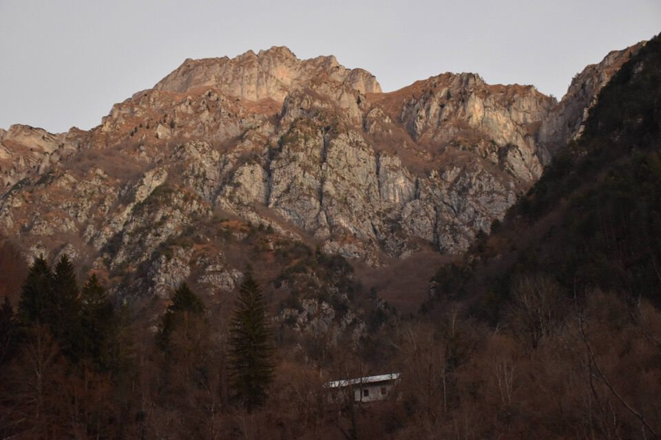
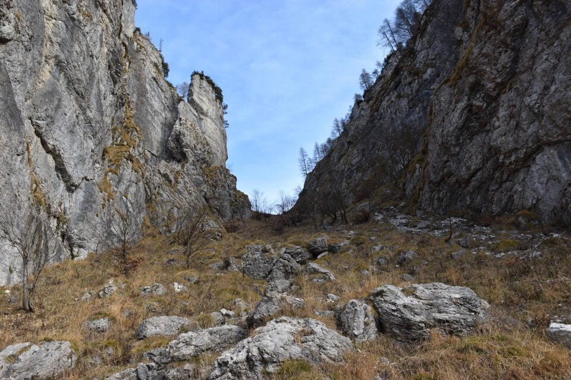
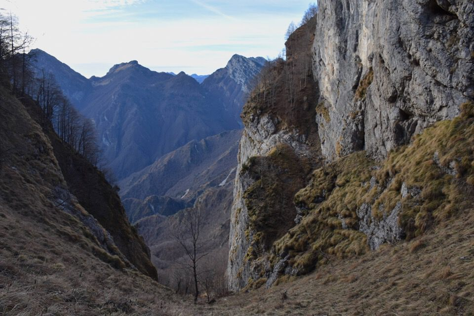
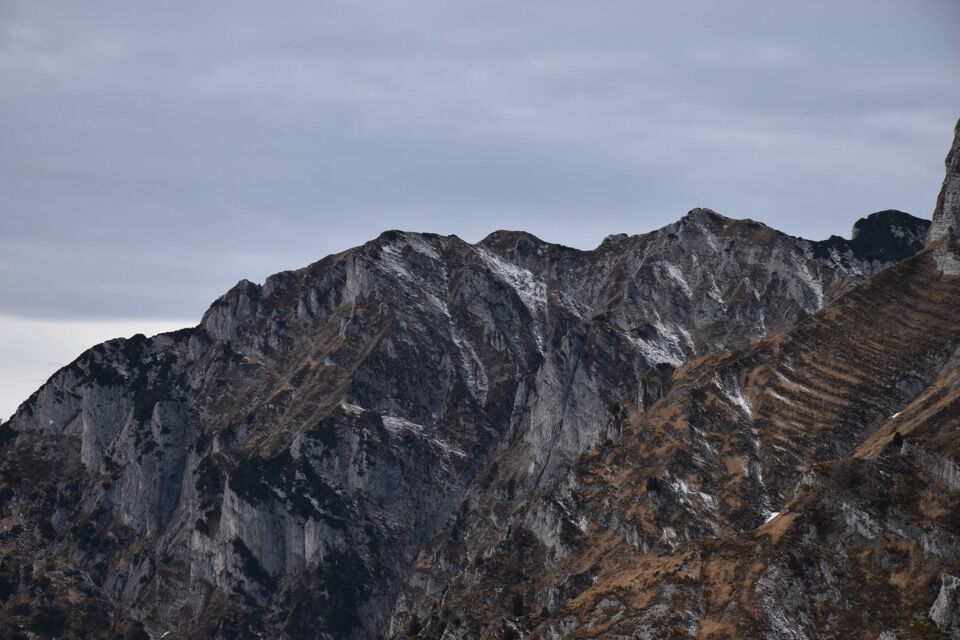
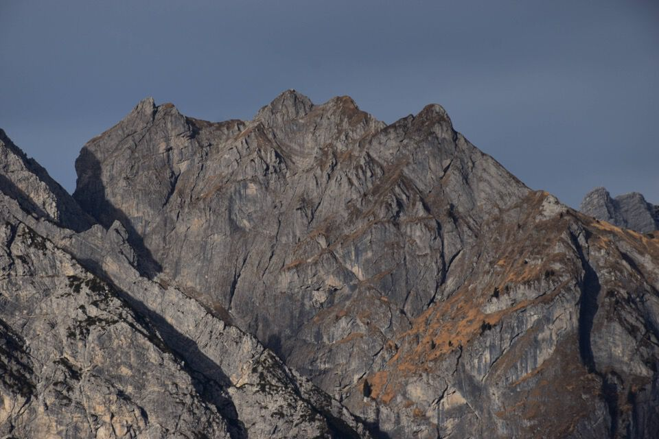
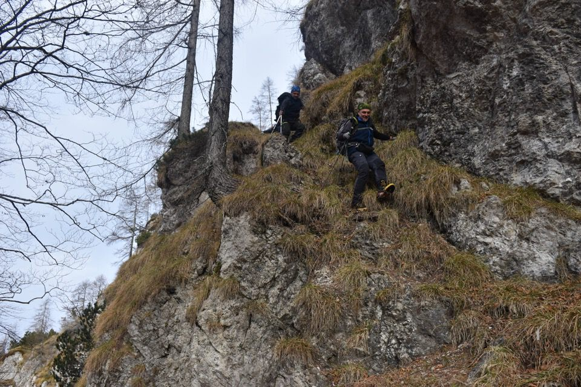

Luogo mitico dei cacciatori tramontini: finalmente ci sono stato, già due anni fa tormentavo i miei compagni d'allora per salire su questo benedetto monte; ora è il momento di pensare a intriganti traversate.
Bisogna prendere con le pinze il toponimo Rupàt, giacché estrapolato semplicemente dalla frase del garibaldino Andreuzzi «La banda [...] onde rifugiarsi s’arrampica per le balze Rupat ed arriva alla forca del Poul [...]». Ma Rupat, come Rop, è un termine molto generico e antico che altro non significa che "roccia" e derivati.
Per la tremenda strada della val Silisia arriviamo a Stua giusto in tempo per l'alba: qui il monte Maglina.
Stua sormontata dall'enorme mole del Dosàip.
Lassù il Domanzòn, dove ero con Kelen appena sei giorni fa: e io che volevo tornarci già oggi salendo da qui!
Prendiamo il sentiero per la forca del Pòul: a differenza delle aspettative, non è poi un cattivo sentiero, anzi; nel bosco di faggi naturalmente la traccia si fa evanescente, ma con un po' di attenzione non è difficile seguirne i tornanti, specialmente in discesa.
Bellissime faggete con resti di costruzioni: oltre a questa, se ne trova una ancora più in alto.
Bel landro poco sotto la forca del Pòul.
Ma che spettacolo di forcella!
 Il mitico passaggio della stanga per salire al Maglina... mica tanto facile eh... bisogna prima arrivarci lì!
Con percorso abbastanza ovvio saliamo al nostro monte.
L'intringante versante sud-est del Rupàt.
Ripido!
La vista sui canali di Meduna è fenomenale.
Laggiù le due quote del Domanzòn su cui abbiamo transitato la settimana scorsa.
Il Castello con forcella Navalesc... ma che bel posto.
Foto ricordo della combriccola...

...e della mie opera edilizia.
Proprio mentre stiamo per scendere... guarda che luce!
Magnifico e vicinissimo il Dosàip!
Burlatòn, parete sud, a picco sul canal dal Vuâr.
Il caro Spiciòn: adiòs.
E ora giù dritti.
Magnifica «scala» dove i camosci vi hanno marcato un sentiero.
Antiche testimonianze nel vallone del Pòul.